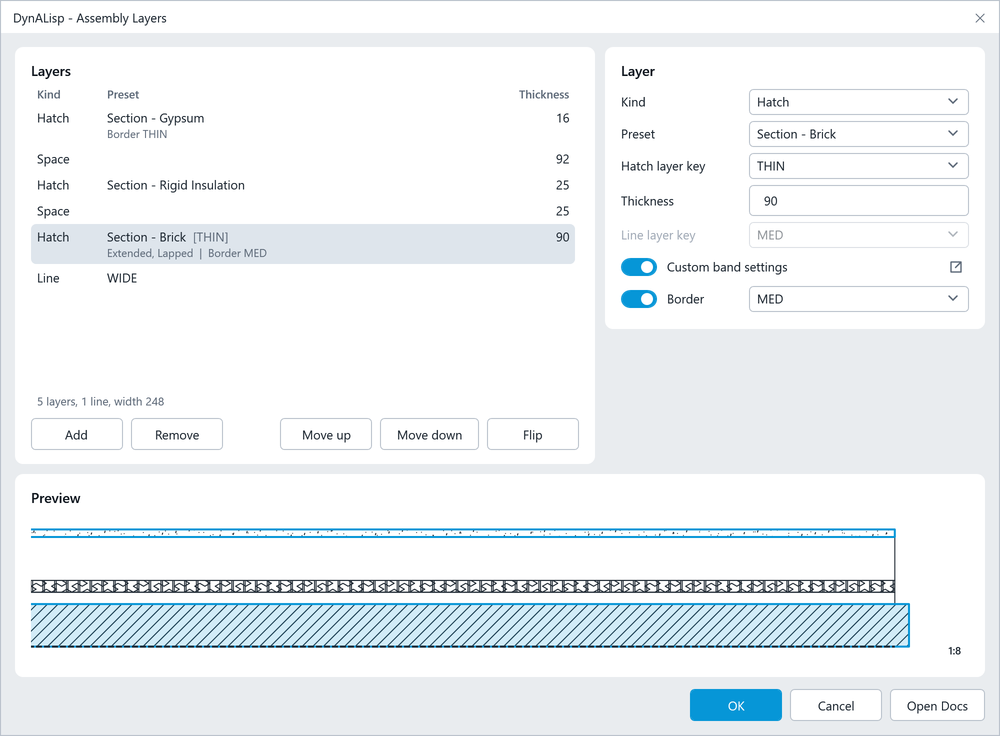

Couches d'assemblage (Assembly Layers)
Un préréglage Quick Draw dessiné avec Linear ou Offset peut être un assemblage : sa bande est faite de plusieurs couches côte à côte, comme un mur (voir Dessin rapide – Assemblages). Cochez Assembly dans la zone Behaviors de la fenêtre Quick Draw, puis cliquez le bouton carré ouvrir à côté : la fenêtre Assembly Layers modifie les couches du préréglage affiché (de chaque préréglage sélectionné, avec OK). Le texte à côté du bouton donne leur nombre, et Width montre leur total.

- Layers – les couches, dans l'ordre en travers de la bande : la première sur la ligne (ou l'objet), les autres vers le côté de la bande, avec Justification sur Edge et avec Offset (un mur dessiné sur sa face intérieure : sa couche intérieure d'abord); de son bord gauche à son bord droit, vu du point de départ, sur Center. Chaque ligne donne son type, son préréglage (ou la clé de calque d'une ligne) et son épaisseur; un préréglage qui n'existe plus est marqué (missing). Sous la liste : le nombre de couches et de lignes, et la largeur de la bande, le total des épaisseurs. Plusieurs couches peuvent être sélectionnées (Ctrl / Maj clic) pour les retirer d'un coup.
- Kind – Hatch : une bande de son épaisseur hachurée comme le dit un préréglage Quick Draw; Space : une bande de son épaisseur sans hachure (une lame d'air, une cavité); Line : une ligne le long de la bande, là où elle est dans la liste (un pare-vapeur, une membrane). Une couche garde son préréglage, son épaisseur et sa clé de calque de ligne quand son type change : remise comme avant, elle les retrouve, et une ligne changée en Hatch ou en Space a tout de suite une épaisseur (celle d'une nouvelle couche si elle n'en a jamais eu); changez-la dans Thickness.
- Preset – le préréglage Quick Draw d'une couche Hatch, par groupe et par nom. Il donne la hachure de la couche : son préréglage de hachure, son Scale by width (l'épaisseur de la couche comme largeur), son Origin on line et son Origin X / Y (depuis la ligne de la couche : son centre, ou son bord le plus proche de la ligne de la bande quand la Justification de ses propres réglages de bande est Edge, vers l'intérieur de la couche; sans eux, comme le dit son préréglage). Sa méthode, sa largeur, ses extrémités et sa bordure ne sont pas utilisées : la couche se termine avec la bande, à moins d'avoir ses propres réglages (Custom band settings), et n'a une bordure à elle qu'avec Border. Les préréglages listés sont ceux enregistrés (un nouveau préréglage reçoit son identifiant une fois enregistré) qui ne sont pas eux-mêmes des assemblages.
- Hatch layer key – d'une couche Hatch : From preset, ou une autre clé de calque pour la hachure de cette couche seulement (le préréglage lui-même ne change pas), affichée entre crochets après le préréglage dans la liste. Enregistrée dans la colonne Assembly comme quatrième champ de la couche (P:qd-Brick:90:HATCH), seulement quand elle est définie.
- Thickness – d'une couche Hatch ou Space, en unités de dessin (plus grande que 0). Choisir un préréglage y met sa largeur (la première quand il en a plusieurs), à moins qu'une autre épaisseur ait été tapée.
- Line layer key – la clé de calque d'une couche Line (la clé de calque du contour du préréglage pour une nouvelle). La ligne reçoit le calque de la clé, ses propriétés DuCalque. Une ligne entre deux couches prend la place de la ligne de leur joint.
- Custom band settings – d'une couche Hatch : cochée, la couche se termine, tourne ses coins, dessine ses joints et aligne sa hachure comme une bande à elle; cliquez sur le bouton carré ouvrir à côté pour les régler dans la fenêtre Band Settings, pour les couches sélectionnées où elle est cochée. Une couche qui a ses propres réglages se termine en travers de sa propre épaisseur : Round est un demi-cercle en travers de la couche, Extended sans prolongement sort de la moitié de l'épaisseur de la couche. Sa Justification est la ligne de la couche, de la même façon pour chaque couche : Center (son milieu) ou Edge (son bord le plus proche de la ligne de la bande), là où commence sa hachure et ce autour de quoi tournent ses extrémités Angled. Rien n'est demandé au dessin. Décochée, la couche se termine et tourne avec toute la bande (extrémités d'équerre et coins en onglet, ou ceux choisis au dessin); ses réglages sont gardés pour quand elle est cochée de nouveau. Dans la liste, ses extrémités et ses coins sont affichés sous son préréglage (Extended, Lapped). Une nouvelle couche part des réglages de bande du préréglage.
- Border – d'une couche Hatch : cochée, le contour de la couche est dessiné sur la clé de calque choisie à côté (ses propriétés DuCalque), même quand le préréglage n'a pas de bordure; elle est affichée dans la liste (Border MED). Une ligne entre deux couches est dessinée une seule fois : par la couche qui a sa propre bordure (la première quand les deux en ont une), sinon comme la bordure du préréglage; là où se trouve une couche Line, sa ligne prend cette place. Quand deux couches tournent leurs coins autrement, chacune dessine son propre côté. Une couche qui a tout son contour le reçoit comme une seule polyligne fermée.
- Preview – l'assemblage tel qu'il est dessiné, construit à mesure que les couches sont ajoutées et changées : un mur dessiné en plan, sa ligne de gauche à droite, la première couche en haut. Chaque couche est hachurée comme son préréglage, se termine à droite comme elle se termine, sa propre bordure en bleu; les couches sélectionnées sont teintées. Le mur est montré à une échelle qui le fait tenir (dans le coin, 1:10), ses hachures à la même échelle, pour qu'elles paraissent, par rapport à l'épaisseur des couches, comme elles sont dessinées à l'échelle d'annotation du dessin.
- Add – ajoute une couche avec les valeurs des champs après les couches sélectionnées (sinon en dernier), et la sélectionne. Sans sélection, les champs montrent une nouvelle couche : une Hatch du premier préréglage, une Line sur la clé de calque de bordure du préréglage.
- Modifier une couche – avec une couche sélectionnée, les champs la montrent, et un champ changé la change.
- Modifier plusieurs couches – sélectionnez-les avec Ctrl ou Maj clic : les champs montrent la première, le titre de la zone donne leur nombre (Layer (3 selected)), et un champ changé est donné à chacune de celles auxquelles il s'applique, leurs autres valeurs gardées : Kind les change toutes en ce type, chacune gardant son propre préréglage, son épaisseur et sa clé de calque; Preset, Hatch layer key, Custom band settings (et la fenêtre Band Settings), Border et sa clé de calque vont aux couches Hatch, Thickness aux couches Hatch et Space, Line layer key aux couches Line. Move up et Move down sont pour une seule couche.
- Ajouter une couche d'un autre type – ajoutez (Add) une copie de celle sélectionnée, puis changez ses champs.
- Remove – retire les couches sélectionnées.
- Move up / Move down – la place de la couche sélectionnée, vers le bord gauche ou le bord droit de la bande.
- Flip – met les couches dans l'autre sens, la dernière d'abord. Au point de départ de Linear (ou à l'invite de sélection d'Offset), Flip fait de même pour une seule bande.
- OK – vérifie les couches (une épaisseur plus grande que 0 pour une Hatch ou une Space, un préréglage pour une Hatch, une clé de calque pour une Line ou une bordure, les valeurs des réglages de bande : la première qui n'est pas valide est sélectionnée et un message dit quoi corriger), puis les donne aux préréglages sélectionnés (enregistrées avec eux par Draw ou Save de la fenêtre Quick Draw). Cancel annule les changements. Open Docs ouvre cette page.